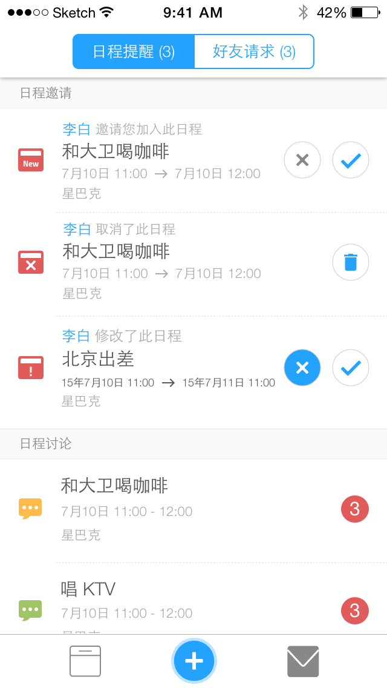
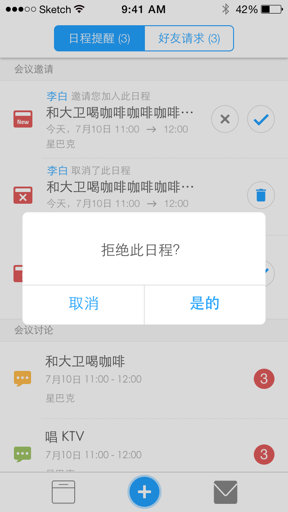
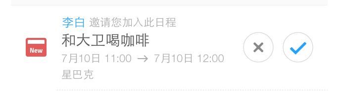
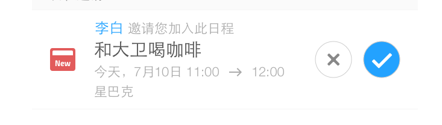
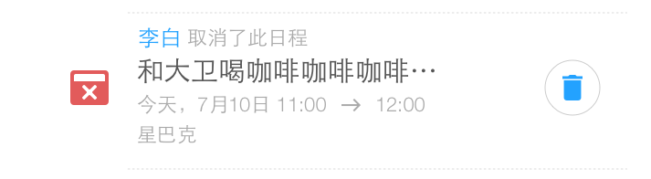
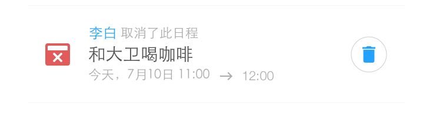
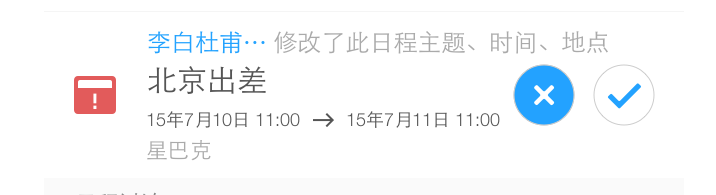
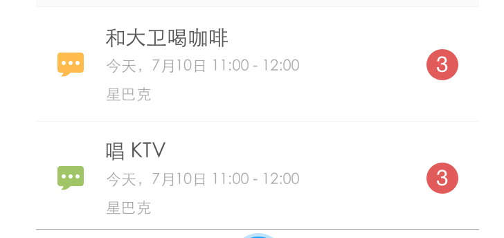

消息视图需求文档
1 概述
消息列表页面显示日程提醒和好友请求
其中日程提醒包括:
- 日程邀请
- 邀请加入日程
- 通知删除日程
- 日程更新，重新邀请
- 日程讨论


2 日程提醒
2.1 日程邀请
日程邀请包括3类情况：新日程邀请，日程被删除，日程更新。
在日程邀请中，左侧显示提醒的类别。中间的文字区域高度最大为130px
第一行显示管理员名称和日程操作的文字，第二行是日程主题，第三行是时间，第四行是地点。
主题最多显示10个字，后面用省略号代替；名字最多显示4个字,其余用省略号代替
点击日程邀请，进入日程详情页面
2.1.1 新日程邀请


新日程邀请，出现在日程邀请栏中，按照时间顺序排列。
时间的格式如下：
- 提供：今天，明天，后天，下周，下月，明年的快捷时间提示
- 如果是跨天：X月X日 XX:XX -> X月X日 XX:XX；如果跨年，日期前面加上年份的后两位。
- 邀请时间如果不是今年，则日期前面添加年份的后两位
- 提供接受和拒绝两个按钮
接受日程后，“日程邀请”列表中该日程消失；“日程讨论”列表中出现该日程
拒绝日程后，弹出提示框，选择“是的”之后该日程消失
2.1.2 日程被删除


日程被删除，参与者在“日程邀请”列表中收到提醒，只提供删除按钮
管理员删除日程后，参与者的日历直接删除，同时消息列表中出现日程被删除的通知
点击删除按钮之后，不需要弹框，该消息直接被删除
2.1.3 日程更新

管理员更新日程中的主题/时间/地点，参与者收到新的日程邀请
更新日程的邀请，操作和日程邀请一致
如果更新了时间和地点，对应的文字颜色从"AAAAAA"变为"555555"
2.2 日程消息
当日程中有人发言时，其余参与者会收到日程消息
点击日程消息，进入日程讨论页面

日程讨论左侧icon的颜色对应不同的日程类别
日程讨论右侧，显示未读消息数
出现未读消息的日程，跳到列表的顶部；已经有未读消息，再发送消息，日程位置不变化
- 没有未读消息的日程，突然出现未读消息，提醒数字为1，日程跳到顶部
- 有未读消息的日程，有新留言，提醒数字+1，日程位置不变